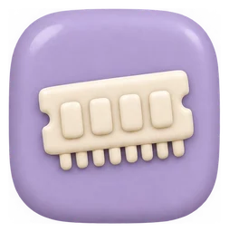
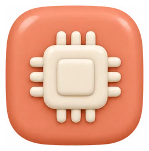
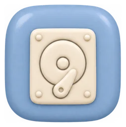

추천대로 정리하기
캐시·빌드 찌꺼기, 압축을 푼 zip, 오래된 설치 파일, 완전히 같은 중복. 안전한 것만 골라 한 번에 휴지통으로.
캐시·빌드 찌꺼기33.7 GB
압축 푼 zip2.3 GB
완전히 같은 중복1.3 GB
어디에 무엇이 있는지, 무엇을 지워도 되는지. 토니 파일박스가 찾아 주고, 추천하고, 언제든 되돌려 줍니다.
 한눈에 보는 내 맥
한눈에 보는 내 맥스캔이 끝나면 무엇이 자리를 차지하는지, 무엇을 비워도 되는지 바로 보여요.
 이름 검색0초510만 개 이름에서
이름 검색0초510만 개 이름에서 정리 추천0GB안전한 것만 골라서
정리 추천0GB안전한 것만 골라서 맥 건강0점매주 알아서 점검
맥 건강0점매주 알아서 점검 영구 삭제0건모두 되돌릴 수 있어요
영구 삭제0건모두 되돌릴 수 있어요화면 속 숫자는 예시예요. 실제 값은 내 맥을 스캔한 결과로 채워집니다.
이름 일부, 날짜, 종류, 떠오르는 말을 섞어 써도 알아듣습니다. ‘영수증’을 치면 receipt와 invoice도 함께 찾아요.
 정리는 추천대로, 버튼 한 번에.
정리는 추천대로, 버튼 한 번에.지워도 되는 것만 골라 이유와 함께 보여 줍니다. 마음에 안 들면 하나씩 빼면 돼요.
캐시·빌드 찌꺼기, 압축을 푼 zip, 오래된 설치 파일, 완전히 같은 중복. 안전한 것만 골라 한 번에 휴지통으로.

모든 정리는 휴지통이나 폴더로 옮기기만 해요. 작업 기록에서 한 번에 원래대로.

같은 파일은 물론, 비슷한 사진과 다시 내보낸 영상도 묶어 가장 좋은 하나를 남겨요.
맥 건강 점수가 늘 메뉴바에. 매주 알아서 스캔하고, 정리할 게 쌓이면 알려 줘요.

화면, 추천, 알림까지 내 언어로. 아랍어는 오른쪽에서 왼쪽으로.
 위험 알림
위험 알림메모리·CPU 과부하, 발열, 디스크 부족이 빨간색으로 이어지면 메뉴바 알림이 와요. 계속되면 몇 분째인지, 풀리면 정상으로 돌아왔다고 다시 알려 줘요.



앱 하나가 CPU나 메모리를 오래 많이 써도 그 앱 이름으로 알려 드려요. 알림을 누르면 시스템 화면이 바로 열려요.
CPU를 96% 쓰고 있어요. 많이 쓰는 앱: Final Cut Pro 612% · Xcode 244%
CPU를 94% 쓰고 있어요. 많이 쓰는 앱: Final Cut Pro 598% · Xcode 231%
35분 만에 정상으로 돌아왔어요
메뉴바 메뉴나 시스템 화면에서 언제든 켜고 끌 수 있어요.

토니 파일박스는 서버도, 계정도, 광고도 없습니다. 모든 분석은 맥 안에서만 일어나요.
처음 한 번만 확인하면, 그다음부터는 Dock에서 바로 열립니다.


다운로드 버튼으로 설치 파일을 받아 두 번 눌러요.


열 수 없다는 창이 뜨면 시스템 설정 → 개인정보 보호 및 보안 아래의 그래도 열기를 눌러요.

메일·사진 폴더까지 정확히 세려면 권한을 켜 주세요. 앱 안 가이드가 순서대로 안내해요.
네. 광고도 계정도 없는 무료 앱입니다.
휴지통, 분류 폴더, 또는 외장 드라이브로 옮겨질 뿐 지워지지 않아요. 작업 기록에서 언제든 되돌릴 수 있고, 휴지통 비우기는 직접 확인하고 하시면 됩니다.
지금은 Apple Silicon(M1 이상) 맥용입니다. 인텔 맥용은 준비 중이에요.
아이폰·아이패드에는 설치할 수 없어요. 대신 같은 와이파이에서 아이폰으로 맥 대시보드를 여는 기능을 준비하고 있어요.
애플 공증을 받기 전인 개인 개발 앱이라 macOS가 처음 한 번 확인을 요청해요. 앱은 파일을 밖으로 보내지 않습니다.